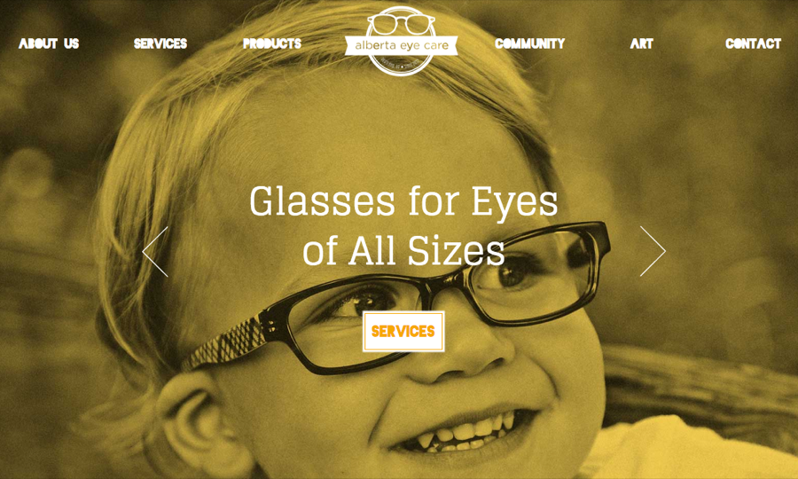
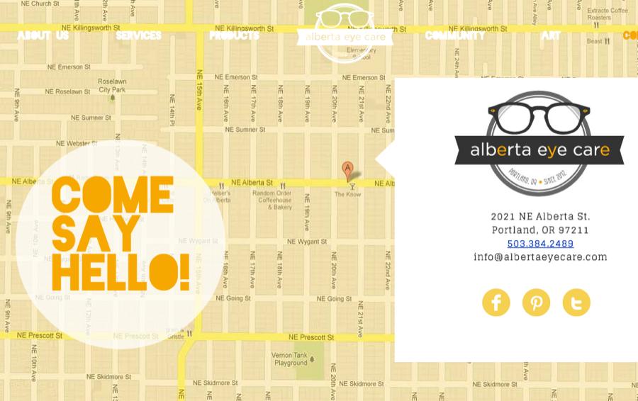
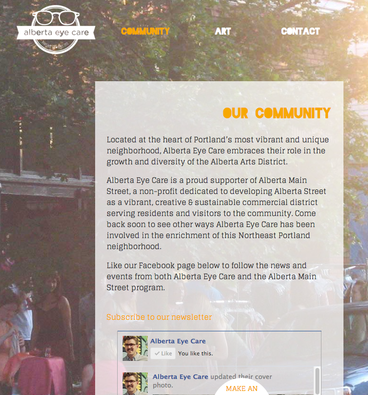

Nº 21 · Habitat III — The early internet & client work
Alberta Eye Care
A photo-heavy neighborhood optometry site with background transitions, worthy of the Alberta Arts District.
Observed
- First observed
- 2012
- Design
- Mollie Ruskin
WordPressCustom plugin
A site worthy of Portland's iconic Alberta Arts District, with Alberta Eye Care
Our friends at Alberta Eye Care were launching a small business in one of Portland's best known neighborhood and wanted a site that matched the look and feel of their new artistic home.
We helped design a new logo and an interactive and photo-heavy site, that showcased their beautiful products, customers, and neighborhood.
The site is a custom WordPress theme with a custom plugin to handle the background transitions.
Plates · from the field



Field notes
Check out Alberta Eye Care
Designed by Mollie Ruskin with most theme construction done by Noah Manger , alongside James and Laura Armstrong of Alberta Eye Care